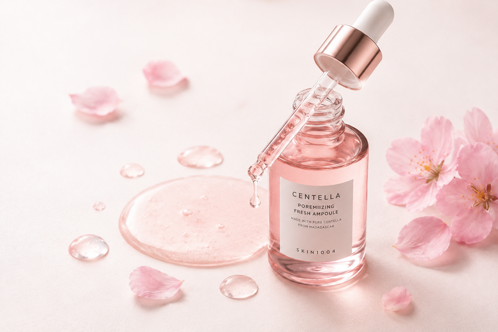
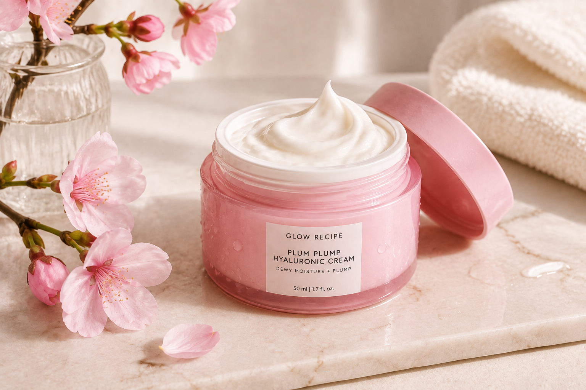
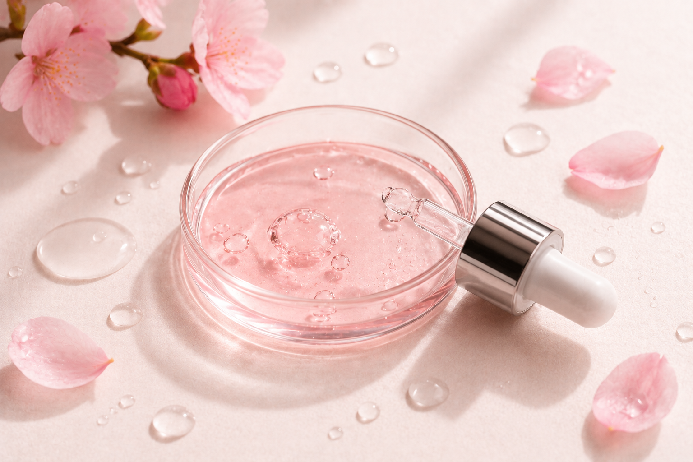
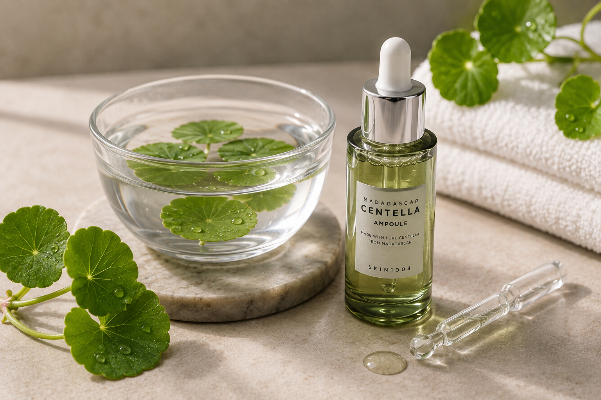
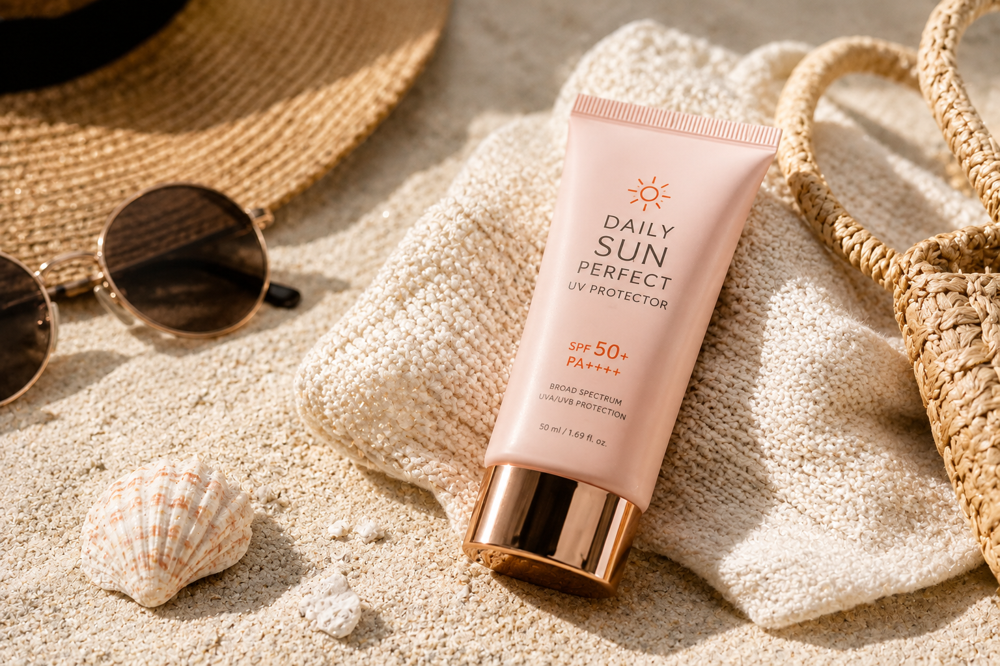

Inicio / Tips & Rutina
Conocer tu tipo de piel es la base de toda buena rutina. Responde un test de 2 minutos o explora cada tipo directamente.
Un cuestionario rápido que analiza brillo, sensibilidad y textura para recomendarte los productos ideales.


Cada tipo de piel enfrenta retos distintos. Identifica el tuyo y descubre cómo tratarlo.

Pérdida de agua que causa tirantez, líneas finas visibles y textura áspera al tacto.
Ver soluciones →
Exceso de sebo que genera brillo constante, poros visibles y tendencia a puntos negros.
Ver soluciones →
Combinación de zonas grasas y secas que necesita productos balanceados por área.
Ver soluciones →
Reacciona con facilidad a nuevos productos, clima o fricción, mostrando rojeces.
Ver soluciones →
Brotes frecuentes, marcas post-acné y poros obstruidos que requieren cuidado específico.
Ver soluciones →
Pérdida de firmeza, líneas de expresión más marcadas y luminosidad reducida.
Ver soluciones →El orden importa: aplica tus productos de la textura más ligera a la más pesada. Elige mañana o noche.
Elimina impurezas y exceso de grasa sin resecar la piel.
Equilibra el pH y prepara la piel para absorber mejor el resto de productos.
Trata necesidades específicas como hidratación, luminosidad o manchas.
Cuida la piel más delgada del rostro, reduce ojeras y líneas finas.
Sella la hidratación y fortalece la barrera cutánea.
Imprescindible de día: protege contra rayos UV y previene el envejecimiento.
Los sérums son concentrados de ingredientes activos que atacan necesidades específicas de tu piel. Conoce los más comunes y para qué sirve cada uno.
Ilumina el tono de la piel, ayuda a unificarlo y protege contra el daño de radicales libres.
Ver productos →Regula la producción de grasa, minimiza la apariencia de los poros y calma el enrojecimiento.
Ver productos →Atrae y retiene agua en la piel, dejándola más rellena, suave y con aspecto saludable.
Ver productos →Acelera la renovación de la piel, suaviza líneas de expresión y mejora la textura general.
Ver productos →Penetra los poros para disolver el exceso de grasa e impurezas, ideal para piel con acné.
Ver productos →Estimulan la producción de colágeno, ayudando a mantener la piel firme y con elasticidad.
Ver productos →Guías, mitos y consejos de expertas para que aproveches al máximo tu rutina coreana.
Conoce los pasos esenciales para lograr una piel saludable y radiante.

Descubre los ingredientes estrella y sus beneficios reales para tu piel.

Encuentra los productos ideales para tu piel y mejora tu rutina desde hoy.

Separamos la realidad de la exageración en el K-beauty.

Rutina mínima para pieles irritadas o en tratamiento. Cuida tu barrera cutánea.

La razón por la que este paso nunca debe faltar de día.